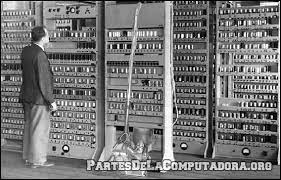
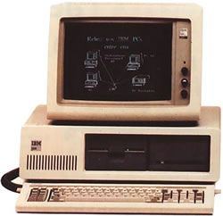
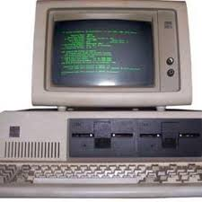
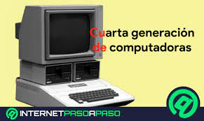
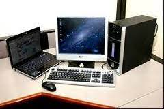

Generación de las computadoras
Primera generacion
La primera generación de computadoras abarca desde el año 1938 hasta el año 1955, aunque realmente estas fechas son de las máquinas comerciales que se podrían llamar la primera generación de computadoras. Características: Estaban construidas con electrónica de válvulas de vacío. Se programaban en lenguaje máquina, había una gran desconocimineto de las capacidades de las computadoras, se caracteriza por la aplicación de tubos de vacío, disponía de mil palabras de memoria central.

La operación de estos equipos era de alto costo y adicionalmente consumían gran cantidad de electricidad, generaban mucho calor la cual era la causa de mal funcionamiento. La primera generación de computadoras se basaba en lenguaje máquina para realizar operaciones y solo podían resolver un tiempo a la vezLos computadores UNIVAC y ENIAC son ejemplos de componentes de la primera generación. LA UNIVAC fue la primera computadora comercial entregada a un cliente.
Segunda generación
La segunda generación de las computadoras u ordenadores reemplazó las válvulas de vacío por los transistores. Por eso las computadoras de la segunda generación son más pequeñas y consumen menos electricidad que las de la anterior, cerca de la década de 1960, las computadoras seguían evolucionado, fueron construidas con circuitos de transistores, se programan en nuevos lenguajes llamados lenguajes de otro nivel, se remplazó las válvulas de vacío por los transistores permitiendo que sean más pequeñas a la primera generación.

Ejemplos de esta época son el IBM 1401 y el BURROUGHS B 200. En 1954 IBM comercializa el 650, de tamaño medio. El primer computador totalmente transistorizado fue el TRADIC, de laboratorios Bell. El IBM TX-0, de 1958, tenía un monitor de vídeo de primera calidad, era rápido y relativamente pequeño, poseía dispositivo de salida snora. El PDP-1, procesador de datos programable, construido por Olsen, fue una sensación en el MIT: los alumnos jugaban Spacewar y Ratón en el laberinto, a través de un joystick y un lápiz óptico.
Tercera generación
Emergieron con el desarrollo de los circuitos integrados (pastillas de silicio) en las cuales se colocan miles de componentes electrónicos, en una integración en miniatura, en 1960 surge la tercera generación de las computadoras su fabricación electrónicas basada en circuitos integrados, su manejo es por medio de los lenguajes de control de los sistemas operativos, se aplican los circuitos integrados en los que se colocan miles de componentes electrónicos.

IBM: PC/XT Fabricado alrededor de 1980. Era construido con tres módulos separados: CPU, monitor y teclado. El monitor era blanco y negro, pudiendo ser substituido por un monitor con 16 colores. El CPU además del procesador albergaba una unidad de disquete de 5" 1/4 con una capacidad de 360KB pudiendo alojar otra unidad de disquete idéntica o un disco rígido con 10MB de capacidad, que era parte integrada en la versión PC-XT. El teclado con 83 teclas, 10 de las cuáles correspondían a funciones pre-programadas, disponía de caracteres acentuados. Poseía una salida para impresora y el PC-XT disponía de un interfaz para comunicaciones asíncronas. El sistema operativo era el PC/MS-DOS el cual era un MS-DOS desarrollado por Microsoft para IBM.
Cuarta generación
La denominada cuarta generación es el producto del microprocesador de los circuitos electrónicos. El tamaño reducido de los chips hizo posible la creación de las computadoras personales. Hoy en día las tecnologías LST y VLSI permiten que cientos de miles de componentes electrónicos se almacenen en un microchip, Aquí aparecen los microprocesadores que es un gran adelanto de la microelectrónica con circuitos de alta tensidad y velocidad también se caracteriza por la integración de componentes electrónicoslo que surge la aparición del microprocesador y dio
acceso al desarrollo del chip.

Microprocesadores: Los microprocesadores también se utilizan en otros sistemas informáticos avanzados, como impresoras, automóviles o aviones. En 1995 se produjeron unos 4000 millones de microprocesadores en todo el mundo. El microprocesador es un tipo de circuito sumamente integrado. Los circuitos integrados, también conocidos como microchips o chips, son circuitos electrónicos complejos formados por componentes extremadamente pequeños formados en una única pieza plana de poco espesor de un material conocido como semiconductor.1lm Los microprocesadores modernos incorporan hasta 10 millones del transistores (que actúan como amplificadores electrónicos, osciladores o, más a menudo, como conmutadores), además de otros componentes como resistencias, diodos, condensadores y conexiones, todo ello en una superficie comparable a la de un sello postal. Un microprocesador consta de varias secciones diferentes.
Quinta generación
La quinta generación de computadoras, también conocida por sus siglas en inglés, FGCS, fue un proyecto hecho por Japón que comenzó en 1981, en vista de la aceleradamarcha de la microelectrónica, la sociedad industrial se ha dado a la tarea de poner también a esa altura el desarrollo del software y los sistemas con que se manejan las computadoras, a partir de los avances tecnológicos que desarrollan en las generaciones se crean los computadores portátil o laptop.

A través de las múltiples generaciones desde los años 1950, Japón había sido el seguidor en términos del adelanto y construcción de las computadoras basadas en los modelos desarrollados en los Estados Unidos y el Reino Unido. Japón, a través de su Ministerio de Economía, Comercio e Industria (MECI), decidió romper con esta naturaleza de seguir a los líderes y a mediados de la década de 1970 comenzó a abrirse camino hacia un futuro en la industria de la informática. El Centro de Desarrollo y Proceso de la Información de Japón (JCDPI) fue el encargado de llevar a cabo un plan para desarrollar el proyecto. En 1979 ofrecieron un contrato de tres años para realizar estudios más profundos con la participación conjunta de empresas de la industria dedicadas a la tecnología e instituciones académicas, a instancias de Hazime Hiroshi. Fue durante este período cuando el término "computadora de quinta generación" comenzó a ser utilizado.
Listas
Listas de Hardware
- Tarjeta Madre
- Fuente de poder
- Ventilador
- Disco duro
- Procesador
- Ram
Sistemas operativos
- Windows
- Unix
- Linux
- Mac OS
- Ubuntu
Lista de Software
- Microsoft Office
- Reproductor VLC
- CCLeanerf
- Avast Free Antivirus
- Spotify
Lenguaje de programación
- JAVA
- Python
- Javascript
- C++
- PHP
Tablas de Datos
| ID |
Nombre |
Correo |
| 1712902871 |
Martin |
carrielmartin859@gmail.com |
| 1712902871 |
Martin |
carrielmartin859@gmail.com |
| 1712902871 |
Martin |
carrielmartin859@gmail.com |
Dispositivos de almacenamiento
|
|
| Disco Duro |
DVD |
CD |
| Pendrive |
Micro SD |
Tarjeta SD |
| Disquete |
Disco duro externo |
Memory stick |
| |
|
Dispositivos de entrada
| Microfono |
Webcam |
Mouse |
| Teclado |
Escaner |
Audifonos |
| Jostick |
Camara |
Tarjeta de sonido |
Dispositivos de salida
|
|
| Monitor |
Bocinas |
Proyector |
| Impresora |
Plotter |
|
| Puerto Usb |
Auriculares |
Fax |